نيوبارك · دمشق
كل مائدةتبدأ بالأبيض.
الأجبان واللبنة والحليب واللبن والسمن والقشطة، تُصنع في دمشق من مواد أولية منتجة في سوريا، وبطرق المطبخ السوري.
بكلمات نيوبارك
لذتها بمطتها
جبن الموزريلا من الحليب البقري، للفرن والمقلاة: قوالب، ومبشورًا، وفي صناديق.
- أحجام العبوات
- 150 g – 3 kg
- مدة الصلاحية
- 6 أشهر
- درجة الحفظ
- 2–5 °C
0 cm طول المطّة
يوم دمشقي
مطبخ واحد، وأربع ساعات.
نيوبارك حاضرة على المائدة في كل ساعة من اليوم السوري: سفرة الفطور، وقدر الظهيرة، وكأس العصر، وحلو السهرة.
-
07:00
الفطور
لبنة تحت دائرة من زيت الزيتون، وجبنة بيضاء، وقشطة بالعسل: سفرة تفتتح اليوم.
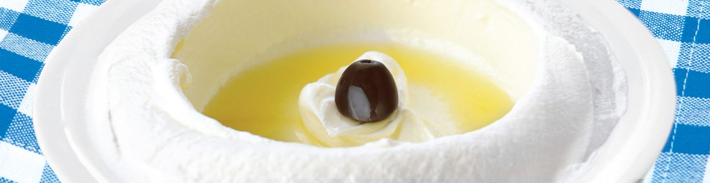
-
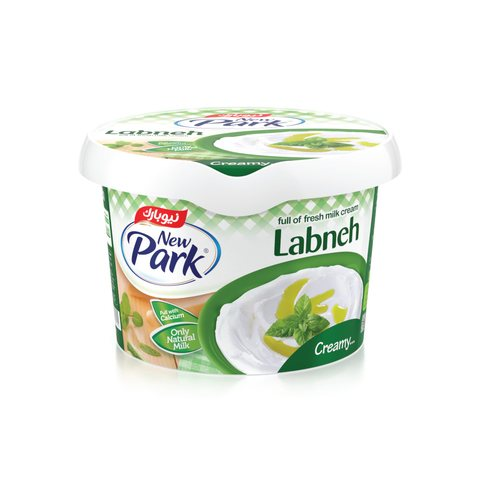
لبنة
Labneh
300 g · 12 في الكرتونة
- الصلاحية
- 3 أشهر
- الحفظ
- 2–5 °C
- نوع العبوة
- عبوة بلاستيك
-
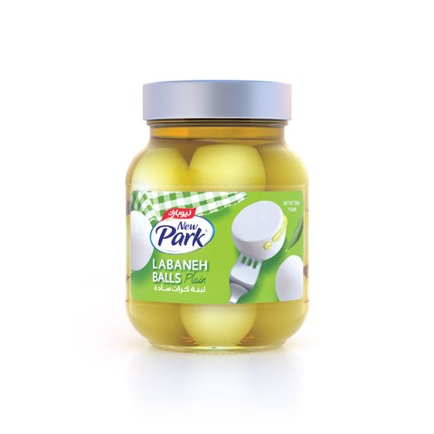
سادة بالزيت
Plain in Oil
300 g · 12 في الكرتونة
- الصلاحية
- 9 أشهر
- الحفظ
- 2–5 °C
- نوع العبوة
- عبوة زجاج
-
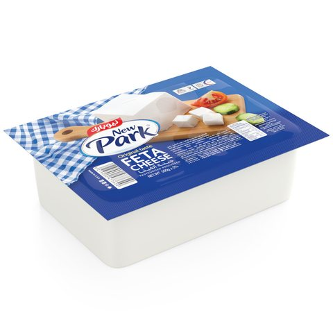
جبنة الفيتا
Feta Cheese
450 g · 12 في الكرتونة
- الصلاحية
- 12 شهرًا
- الحفظ
- 2–5 °C
- نوع العبوة
- تغليف مرن
-
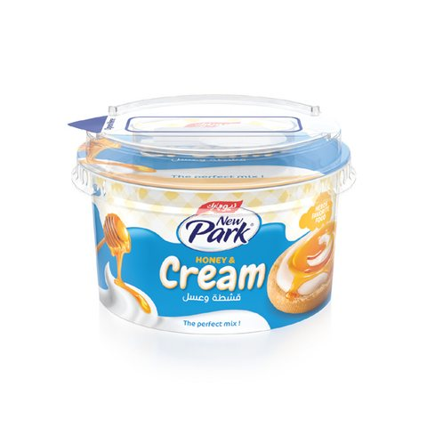
قشطة وعسل
Honey & Cream
140 g · 12 في الكرتونة
- الصلاحية
- 9 أشهر
- الحفظ
- 2–5 °C
- نوع العبوة
- عبوة بلاستيك
-
-
13:00
قدر الظهيرة
سمن للأرز، وكريمة للصلصة، وموزريلا للفرن: ما يحتاجه الطاهي عند الظهر.
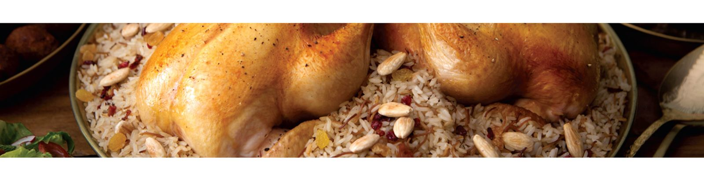
-
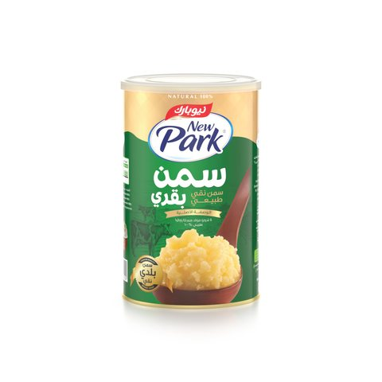
سمن بقري
Cow Ghee
1 kg · 6 في الكرتونة
- الصلاحية
- 2 سنة
- الحفظ
- مكان بارد
- نوع العبوة
- عبوة معدن
-
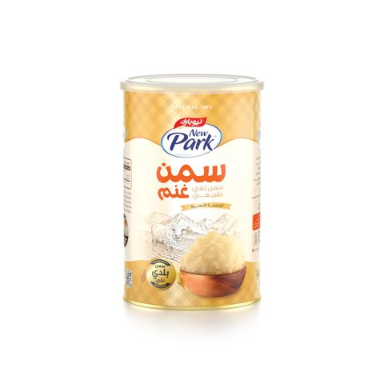
سمن غنم
Sheep Ghee
1 kg · 6 في الكرتونة
- الصلاحية
- 2 سنة
- الحفظ
- مكان بارد
- نوع العبوة
- عبوة معدن
-
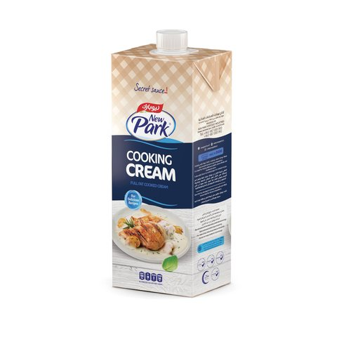
كريمة الطبخ
Cooking Cream
1000 ml · 12 في الكرتونة
- الصلاحية
- 6 أشهر
- الحفظ
- 2–5 °C
- نوع العبوة
- تتراباك
-
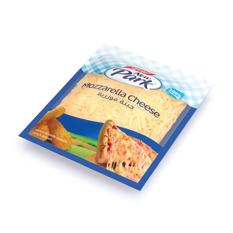
جبن موزريلا مبشور
Shredded Mozzarella Cheese
330 g · 24 في الكرتونة
- الصلاحية
- 6 أشهر
- الحفظ
- 2–5 °C
- نوع العبوة
- تغليف مرن
-
-
17:00
كأس العصر
عيران بارد بالنعناع، ولبن بالكيلو، وحليب بالنكهات لطريق العودة من المدرسة.
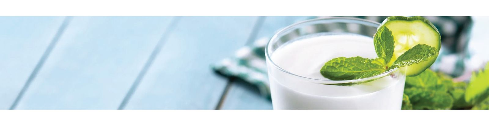
-
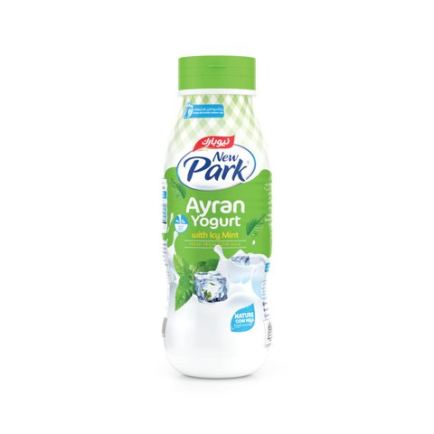
نعنع
Mint
250 ml · 24 في الكرتونة
- الصلاحية
- 3 أشهر
- الحفظ
- 2–5 °C
- نوع العبوة
- عبوة بلاستيك
-
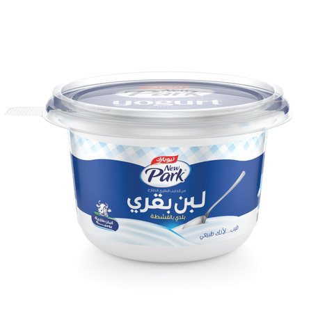
لبن
Yogurt
1 kg · 6 في الكرتونة
- الصلاحية
- 45 يومًا
- الحفظ
- 2–5 °C
- نوع العبوة
- عبوة بلاستيك
-
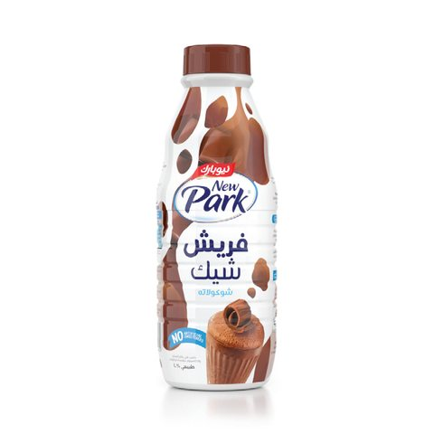
شوكولا
Chocolate
850 ml · 12 في الكرتونة
- الصلاحية
- 6 أشهر
- الحفظ
- مكان بارد
- نوع العبوة
- عبوة بلاستيك
-
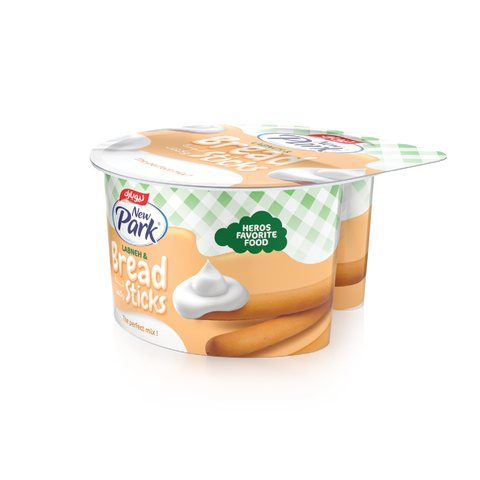
كعك ولبنة
Breadsticks & Labneh
140 g · 12 في الكرتونة
- الصلاحية
- 9 أشهر
- الحفظ
- مكان بارد
- نوع العبوة
- عبوة بلاستيك
-
-
21:00
حلو السهرة
تمر محشو بالقشطة، وشوكولا على خبز دافئ، وطحينة بدبس التمر: مائدة ما بعد العشاء.
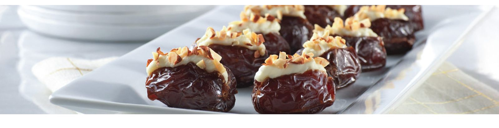
-
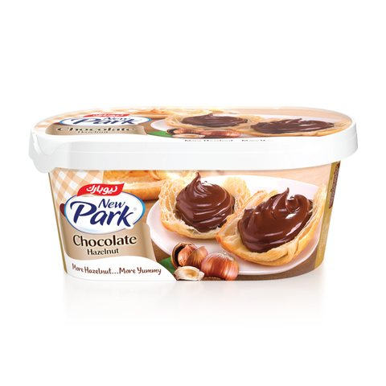
شوكولا بالبندق
Hazelnut Chocolate
300 g · 12 في الكرتونة
- الصلاحية
- 12 شهرًا
- الحفظ
- مكان بارد
- نوع العبوة
- عبوة بلاستيك
-
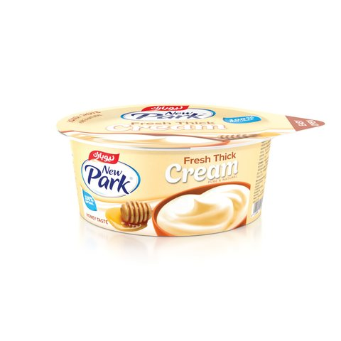
نكهة العسل
Honey Flavored
90 g · 24 في الكرتونة
- الصلاحية
- 6 أشهر
- الحفظ
- 2–5 °C
- نوع العبوة
- عبوة بلاستيك
-
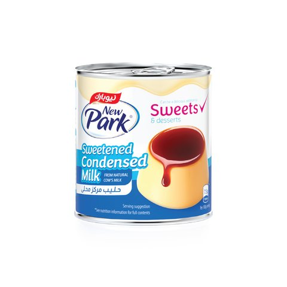
حليب مكثف
Condensed Milk
370 g · 24 في الكرتونة
- الصلاحية
- 12 شهرًا
- الحفظ
- مكان بارد
- نوع العبوة
- عبوة معدن
-
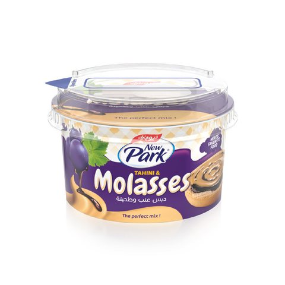
دبس التمر وطحينة
Dates Molasses & Tahini
140 g · 12 في الكرتونة
- الصلاحية
- 9 أشهر
- الحفظ
- 2–5 °C
- نوع العبوة
- عبوة بلاستيك
-
المنتجات
سبعة أقسام، واسم واحد.
من حصة فطور وزنها 20 g إلى صفيحة وزنها 16 kg. اختر قسمًا لترى منتجاته كلها.
-
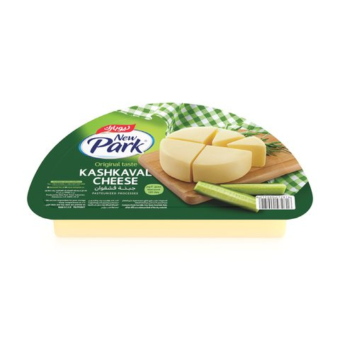
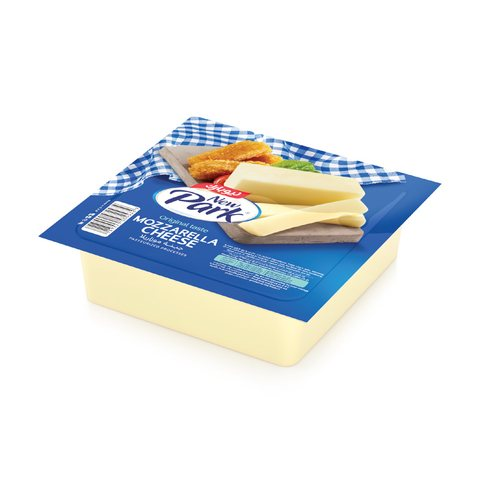
الأجبان جبن قشقوان · جبن موزريلا · جبنة الفيتا البيضاء · أجبان · جبنة مطبوخة افتح القسم -
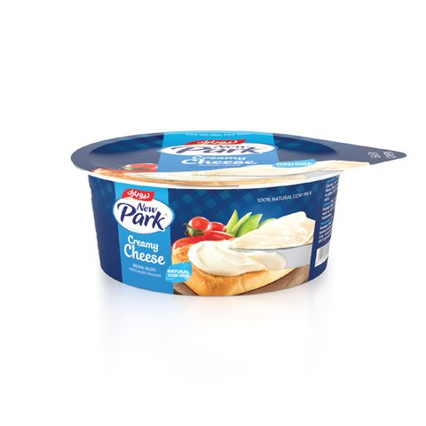
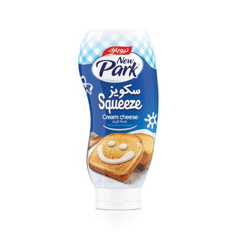
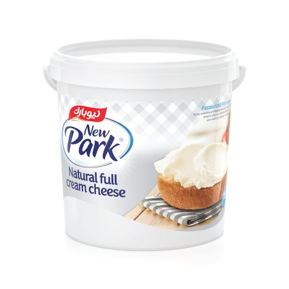
الأجبان القابلة للدهن جبنة كريمية · جبنة قشطية افتح القسم -
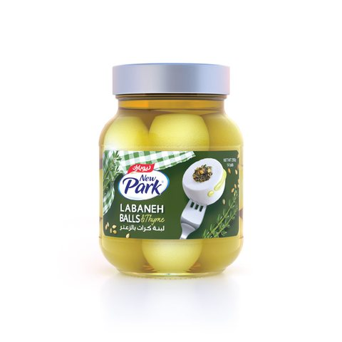
اللبنة واللبن لبنة · لبنة كرات · لبن · لبن عيران افتح القسم -
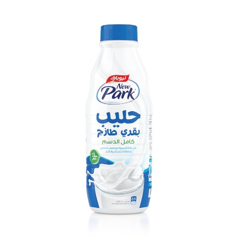
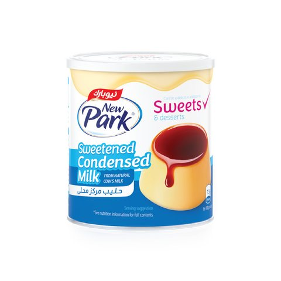
الحليب حليب بقري · حليب بقري نكهات · حليب مكثف محلى افتح القسم -
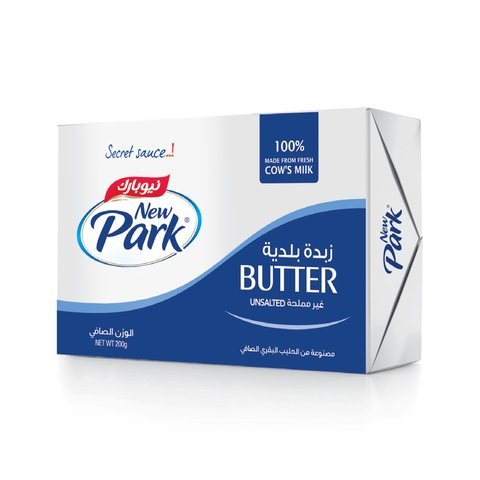
السمن والزبدة والقشطة سمن بقري · سمن غنم · زبدة · كريمة الطبخ · قشطة · قيمر · كريمة الخفق افتح القسم -
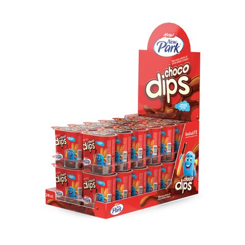
الحلو والوجبات الخفيفة شوكولا بالبندق · المزيج المثالي · كعك وغموس افتح القسم -
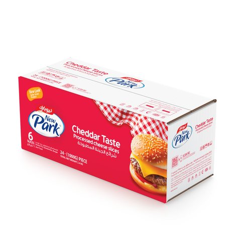
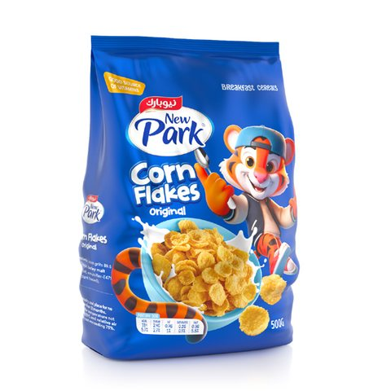
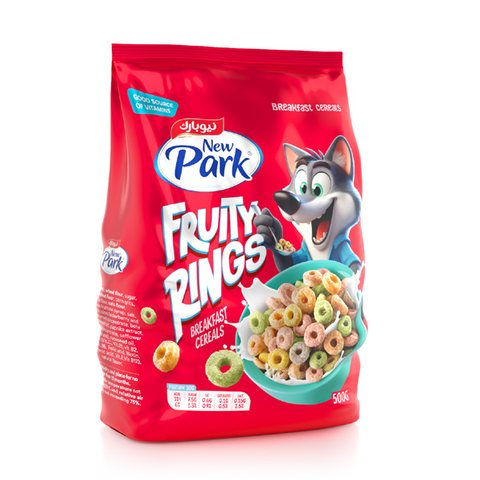
منتجات خاصة منتجات خاصة · رقائق الذرة افتح القسم
الجودة أولًا
“كان حرصنا منذ البداية على أن نقدم لعملائنا الأعزاء منتجًا من نوع خاص.”
جُهّزت مختبرات نيوبارك وخطوط إنتاجها بإشراف خبراء الجودة والغذاء، وتحمل الشركة شهادات في مراقبة الجودة تتيح تصدير منتجاتها.
2–5 °C
درجة الحفظ المطبوعة على أجبان نيوبارك المبرّدة واللبنة واللبن والعيران
120 يومًا
مدة تعتيق جبن القشقوان
2 سنة
مدة صلاحية صفيحة السمن
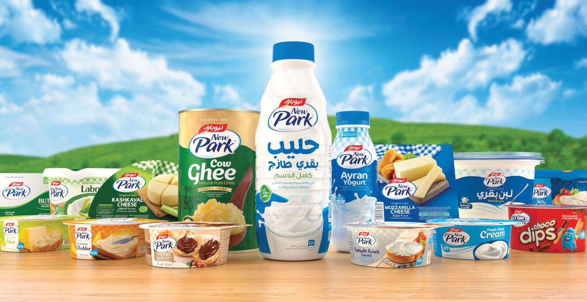
للموزعين والمستوردين
من دمشق إلى الرف، في الكرتونة المناسبة.
يُشحن كل منتج في كرتونة بعدد معروف من القطع، مع مدة صلاحيته وطريقة حفظه. اختر فئة من المنتجات لترى أحجامها.
| المنتج | العبوة | الكرتونة | الصلاحية | الحفظ | نوع العبوة |
|---|---|---|---|---|---|
| جبن قشقوان | 150 g | 36 | 9 أشهر | 2–5 °C | تغليف مرن |
| صندوق جبن قشقوان | 150 g | 36 | 9 أشهر | 2–5 °C | كرتون كرافت |
| جبن قشقوان شرائح | 250 g | 24 | 9 أشهر | 2–5 °C | عبوة بلاستيك |
| جبن قشقوان | 310 g | 36 | 9 أشهر | 2–5 °C | تغليف مرن |
| جبن قشقوان | 3 kg | 6 | 9 أشهر | 2–5 °C | تغليف مرن |
| جبن قشقوان | 8 kg | 2 | 9 أشهر | 2–5 °C | تغليف مرن |
| صندوق جبن موزريلا | 150 g | 36 | 6 أشهر | 2–5 °C | كرتون كرافت |
| جبن موزريلا | 150 g | 36 | 6 أشهر | 2–5 °C | تغليف مرن |
| جبن موزريلا | 300 g | 32 | 6 أشهر | 2–5 °C | تغليف مرن |
| جبن موزريلا مبشور | 330 g | 24 | 6 أشهر | 2–5 °C | تغليف مرن |
| جبن موزريلا | 2 kg | 8 | 6 أشهر | 2–5 °C | تغليف مرن |
| جبن موزريلا مبشور | 3 kg | 2 | 6 أشهر | 2–5 °C | عبوة بلاستيك |
| جبنة الفيتا | 450 g | 12 | 12 شهرًا | 2–5 °C | تغليف مرن |
| صندوق جبنة الفيتا | 450 g | 12 | 12 شهرًا | 2–5 °C | كرتون كرافت |
| جبنة الفيتا | 500 g | 12 | 12 شهرًا | 2–5 °C | عبوة بلاستيك |
| جبنة الفيتا | 4 kg | 1 | 12 شهرًا | 2–5 °C | عبوة معدن |
| جبنة الفيتا | 8 kg | 1 | 12 شهرًا | 2–5 °C | عبوة معدن |
| جبنة الفيتا | 16 kg | 1 | 12 شهرًا | 2–5 °C | عبوة معدن |
| جبنة شلل | 150 g | 36 | 6 أشهر | 2–5 °C | تغليف مرن |
| جبنة دبل كريم | 400 g | 12 | 3 أشهر | 2–5 °C | تغليف مرن |
| صندوق جبنة دبل كريم | 400 g | 12 | 9 أشهر | 2–5 °C | كرتون كرافت |
| جبنة عكاوي | 400 g | 12 | 3 أشهر | 2–5 °C | تغليف مرن |
| جبنة كريمية | 20 g | 8 × 12 | 9 أشهر | مكان بارد | عبوة بلاستيك |
| جبنة كريمية | 90 g | 24 | 9 أشهر | مكان بارد | عبوة بلاستيك |
| جبنة كريمية | 90 g | 24 | 9 أشهر | مكان بارد | عبوة بلاستيك |
| جبنة شيدر | 90 g | 24 | 9 أشهر | مكان بارد | عبوة بلاستيك |
| جبنة غودا | 90 g | 24 | 9 أشهر | مكان بارد | عبوة بلاستيك |
| جبنة بارميزان | 90 g | 24 | 9 أشهر | مكان بارد | عبوة بلاستيك |
| جبنة ايدام | 90 g | 24 | 9 أشهر | مكان بارد | عبوة بلاستيك |
| جبنة ايمنتال | 90 g | 24 | 9 أشهر | مكان بارد | عبوة بلاستيك |
| جبنة فلة | 90 g | 24 | 9 أشهر | مكان بارد | عبوة بلاستيك |
| جبنة نيوبوي | 90 g | 24 | 9 أشهر | مكان بارد | عبوة بلاستيك |
| جبنة كريمية | 150 g | 24 | 9 أشهر | مكان بارد | عبوة بلاستيك |
| جبنة كريمية | 150 g | 24 | 9 أشهر | مكان بارد | عبوة بلاستيك |
| جبنة شيدر | 150 g | 24 | 9 أشهر | مكان بارد | عبوة بلاستيك |
| جبنة كريمية | 200 ml | 12 | 9 أشهر | مكان بارد | عبوة بلاستيك |
| جبنة كريمية | 250 g | 12 | 9 أشهر | مكان بارد | عبوة بلاستيك |
| جبنة كريمية | 250 g | 12 | 9 أشهر | مكان بارد | عبوة بلاستيك |
| جبنة شيدر | 250 g | 12 | 9 أشهر | مكان بارد | عبوة بلاستيك |
| جبنة كريمية | 350 g | 12 | 9 أشهر | مكان بارد | عبوة بلاستيك |
| جبنة كريمية | 350 g | 12 | 9 أشهر | مكان بارد | عبوة بلاستيك |
| جبنة شيدر | 350 g | 12 | 9 أشهر | مكان بارد | عبوة بلاستيك |
| جبنة غودا | 350 g | 12 | 9 أشهر | مكان بارد | عبوة بلاستيك |
| جبنة بارميزان | 350 g | 12 | 9 أشهر | مكان بارد | عبوة بلاستيك |
| جبنة ايدام | 350 g | 12 | 9 أشهر | مكان بارد | عبوة بلاستيك |
| جبنة ايمنتال | 350 g | 12 | 9 أشهر | مكان بارد | عبوة بلاستيك |
| جبنة فلة | 350 g | 12 | 9 أشهر | مكان بارد | عبوة بلاستيك |
| جبنة نيوبوي | 350 g | 12 | 9 أشهر | مكان بارد | عبوة بلاستيك |
| جبنة كريمية | 400 ml | 12 | 9 أشهر | مكان بارد | عبوة بلاستيك |
| جبنة كريمية | 2.5 kg | 4 | 9 أشهر | مكان بارد | عبوة بلاستيك |
| جبنة كريمية | 2.5 kg | 4 | 9 أشهر | مكان بارد | عبوة بلاستيك |
| جبنة كريمية | 5 kg | 2 | 9 أشهر | مكان بارد | عبوة بلاستيك |
| جبنة كريمية | 5 kg | 2 | 9 أشهر | مكان بارد | عبوة بلاستيك |
| جبنة قشطية | 20 g | 8 × 12 | 6 أشهر | 2–5 °C | عبوة بلاستيك |
| جبنة قشطية | 90 g | 24 | 6 أشهر | 2–5 °C | عبوة بلاستيك |
| جبنة كريمي | 150 g | 12 | 6 أشهر | 2–5 °C | عبوة بلاستيك |
| جبنة قشطية | 300 g | 12 | 6 أشهر | 2–5 °C | عبوة بلاستيك |
| جبنة قشطية | 2.5 kg | 4 | 6 أشهر | 2–5 °C | عبوة بلاستيك |
| جبنة قشطية | 5 kg | 2 | 6 أشهر | 2–5 °C | عبوة بلاستيك |
| جبنة شيدر مطبوخة | 110 g | 24 | 9 أشهر | 2–5 °C | عبوة معدن |
| جبنة مطبوخة | 110 g | 24 | 9 أشهر | 2–5 °C | كارتون كرافت |
| جبنة مطبوخة | 110 g | 24 | 9 أشهر | 2–5 °C | عبوة معدن |
| مطبوخة معدلة | 300 g | 12 | 9 أشهر | 2–5 °C | عبوة زجاج |
| جبنة مطبوخة | 300 g | 12 | 9 أشهر | 2–5 °C | عبوة زجاج |
| جبنة مطبوخة | 300 g | 24 | 9 أشهر | مكان بارد | تغليف كارتون |
| لبنة | 90 g | 24 | 3 أشهر | 2–5 °C | عبوة بلاستيك |
| لبنة | 180 g | 24 | 3 أشهر | 2–5 °C | عبوة بلاستيك |
| عرض التوفير | 180 g | 12 × 2 | 3 أشهر | 2–5 °C | عبوة بلاستيك |
| لبنة | 250 g | 12 | 3 أشهر | 2–5 °C | عبوة بلاستيك |
| لبنة لايت | 300 g | 12 | 3 أشهر | 2–5 °C | عبوة بلاستيك |
| لبنة | 300 g | 12 | 3 أشهر | 2–5 °C | عبوة بلاستيك |
| لبنة | 800 g | 6 | 3 أشهر | 2–5 °C | عبوة بلاستيك |
| لبنة | 2.5 kg | 4 | 3 أشهر | 2–5 °C | عبوة بلاستيك |
| لبنة | 5 kg | 2 | 3 أشهر | 2–5 °C | عبوة بلاستيك |
| لبنة بالقشطة | 5.5 kg | 2 | 3 أشهر | 2–5 °C | عبوة بلاستيك |
| لبنة | 6 kg | 2 | 3 أشهر | 2–5 °C | عبوة بلاستيك |
| لبنة | 12 kg | 1 | 3 أشهر | 2–5 °C | عبوة بلاستيك |
| سادة بالزيت معدل | 300 g | 12 | 9 أشهر | 2–5 °C | عبوة زجاج |
| لايت بالزيت معدل | 300 g | 12 | 9 أشهر | 2–5 °C | عبوة زجاج |
| محشية بالزعتر بالزيت معدل | 300 g | 12 | 9 أشهر | 2–5 °C | عبوة زجاج |
| محشية بالزيتون بالزيت معدل | 300 g | 12 | 9 أشهر | 2–5 °C | عبوة زجاج |
| سادة بالزيت | 300 g | 12 | 9 أشهر | 2–5 °C | عبوة زجاج |
| لايت بالزيت | 300 g | 12 | 9 أشهر | 2–5 °C | عبوة زجاج |
| محشية بالزعتر بالزيت | 300 g | 12 | 9 أشهر | 2–5 °C | عبوة زجاج |
| محشية بالزيتون بالزيت | 300 g | 12 | 9 أشهر | 2–5 °C | عبوة زجاج |
| محشية بالحر بالزيت معدل | 300 g | 12 | 9 أشهر | 2–5 °C | عبوة زجاج |
| محشية بالحر بالزيت | 300 g | 12 | 9 أشهر | 2–5 °C | عبوة زجاج |
| لايت | 500 g | 12 | 9 أشهر | 2–5 °C | عبوة بلاستيك |
| محشية بالزيتون | 500 g | 12 | 9 أشهر | 2–5 °C | عبوة بلاستيك |
| سادة | 500 g | 12 | 9 أشهر | 2–5 °C | عبوة بلاستيك |
| محشية بالزعتر | 500 g | 12 | 9 أشهر | 2–5 °C | عبوة بلاستيك |
| محشية بالحر | 500 g | 12 | 9 أشهر | 2–5 °C | عبوة بلاستيك |
| لبن دايت | 1 kg | 6 | 45 يومًا | 2–5 °C | عبوة بلاستيك |
| صندوق لبن دايت | 1 kg | 6 | 45 يومًا | 2–5 °C | كارتون كرافت |
| لبن | 1 kg | 6 | 45 يومًا | 2–5 °C | عبوة بلاستيك |
| صندوق لبن | 1 kg | 6 | 45 يومًا | 2–5 °C | كارتون كرافت |
| سادة | 250 ml | 24 | 3 أشهر | 2–5 °C | عبوة بلاستيك |
| نعنع | 250 ml | 24 | 3 أشهر | 2–5 °C | عبوة بلاستيك |
| دراق | 250 ml | 24 | 3 أشهر | 2–5 °C | عبوة بلاستيك |
| نعنع وخيار | 250 ml | 24 | 3 أشهر | 2–5 °C | عبوة بلاستيك |
| ثوم | 250 ml | 24 | 3 أشهر | 2–5 °C | عبوة بلاستيك |
| فراولة | 250 ml | 24 | 3 أشهر | 2–5 °C | عبوة بلاستيك |
| سادة | 1000 ml | 4 | 3 أشهر | 2–5 °C | عبوة بلاستيك |
| سمن بقري | 250 g | 12 | 2 سنة | مكان بارد | عبوة معدن |
| سمن بقري | 500 g | 12 | 2 سنة | مكان بارد | عبوة معدن |
| صندوق سمن بقري | 500 g | 12 | 2 سنة | مكان بارد | كارتون كرافت |
| سمن بقري | 1 kg | 6 | 2 سنة | مكان بارد | عبوة معدن |
| سمن بقري | 2 kg | 4 | 2 سنة | مكان بارد | عبوة معدن |
| سمن بقري | 16 kg | 1 | 2 سنة | مكان بارد | عبوة معدن |
| سمن غنم | 250 g | 12 | 2 سنة | مكان بارد | عبوة معدن |
| سمن غنم | 500 g | 12 | 2 سنة | مكان بارد | عبوة معدن |
| صندوق سمن غنم | 500 g | 12 | 2 سنة | مكان بارد | كارتون كرافت |
| سمن غنم | 1 kg | 6 | 2 سنة | مكان بارد | عبوة معدن |
| سمن غنم | 2 kg | 4 | 2 سنة | مكان بارد | عبوة معدن |
| سمن غنم | 16 kg | 1 | 2 سنة | مكان بارد | عبوة معدن |
| زبدة | 200 g | 12 × 4 | 12 شهرًا | 2–5 °C | تغليف مرن |
| صندوق زبدة | 200 g | 12 | 12 شهرًا | 2–5 °C | كارتون كرافت |
| زبدة بلدية | 200 g | 12 × 4 | 12 شهرًا | 2–5 °C | تغليف مرن |
| زبدة خليط | 200 g | 12 × 4 | 12 شهرًا | 2–5 °C | تغليف مرن |
| كريمة الطبخ | 160 ml | 24 | 6 أشهر | 2–5 °C | عبوة بلاستيك |
| كريمة الطبخ | 500 ml | 24 | 6 أشهر | 2–5 °C | تتراباك |
| كريمة الطبخ | 800 ml | 12 | 6 أشهر | 2–5 °C | عبوة بلاستيك |
| كريمة الطبخ | 1000 ml | 12 | 6 أشهر | 2–5 °C | تتراباك |
| كامل الدسم | 170 ml | 24 | 6 أشهر | مكان بارد | عبوة بلاستيك |
| حليب بودرة | 350 g | 12 | 12 شهرًا | مكان بارد | تغليف مرن |
| حليب بودرة | 750 g | 12 | 12 شهرًا | مكان بارد | تغليف مرن |
| خالي الدسم | 850 ml | 12 | 6 أشهر | مكان بارد | عبوة بلاستيك |
| كامل الدسم | 850 ml | 12 | 6 أشهر | مكان بارد | عبوة بلاستيك |
| قليل الدسم | 850 ml | 12 | 6 أشهر | مكان بارد | عبوة بلاستيك |
| رغوة اضافية | 850 ml | 12 | 6 أشهر | مكان بارد | عبوة بلاستيك |
| موز | 170 ml | 24 | 6 أشهر | مكان بارد | عبوة بلاستيك |
| مانجا | 170 ml | 24 | 6 أشهر | مكان بارد | عبوة بلاستيك |
| فراولة | 170 ml | 24 | 6 أشهر | مكان بارد | عبوة بلاستيك |
| شوكولا | 170 ml | 24 | 6 أشهر | مكان بارد | عبوة بلاستيك |
| فانيلا | 170 ml | 24 | 6 أشهر | مكان بارد | عبوة بلاستيك |
| عسل | 170 ml | 24 | 6 أشهر | مكان بارد | عبوة بلاستيك |
| تمر | 170 ml | 24 | 6 أشهر | مكان بارد | عبوة بلاستيك |
| فراولة و شوكولا | 170 ml | 24 | 6 أشهر | مكان بارد | عبوة بلاستيك |
| بسكوت حشوة بيضاء | 170 ml | 24 | 6 أشهر | مكان بارد | عبوة بلاستيك |
| براونيز | 170 ml | 24 | 6 أشهر | مكان بارد | عبوة بلاستيك |
| مارشميلو | 170 ml | 24 | 6 أشهر | مكان بارد | عبوة بلاستيك |
| غزلة | 170 ml | 24 | 6 أشهر | مكان بارد | عبوة بلاستيك |
| جوز الهند | 170 ml | 24 | 6 أشهر | مكان بارد | عبوة بلاستيك |
| كوكيز | 170 ml | 24 | 6 أشهر | مكان بارد | عبوة بلاستيك |
| بسكوت | 170 ml | 24 | 6 أشهر | مكان بارد | عبوة بلاستيك |
| علكة | 170 ml | 24 | 6 أشهر | مكان بارد | عبوة بلاستيك |
| عسل | 850 ml | 12 | 6 أشهر | مكان بارد | عبوة بلاستيك |
| تمر | 850 ml | 12 | 6 أشهر | مكان بارد | عبوة بلاستيك |
| فراولة و شوكولا | 850 ml | 12 | 6 أشهر | مكان بارد | عبوة بلاستيك |
| بسكوت حشوة بيضاء | 850 ml | 12 | 6 أشهر | مكان بارد | عبوة بلاستيك |
| موز | 850 ml | 12 | 6 أشهر | مكان بارد | عبوة بلاستيك |
| مانجا | 850 ml | 12 | 6 أشهر | مكان بارد | عبوة بلاستيك |
| فراولة | 850 ml | 12 | 6 أشهر | مكان بارد | عبوة بلاستيك |
| شوكولا | 850 ml | 12 | 6 أشهر | مكان بارد | عبوة بلاستيك |
| قشطة سادة | 155 g | 48 | 12 شهرًا | مكان بارد | عبوة معدن |
| نكهة الفراولة | 155 g | 48 | 12 شهرًا | مكان بارد | عبوة معدن |
| صندوق قشطة بالفراولة | 155 g | 48 | 12 شهرًا | مكان بارد | كارتون كرافت |
| نكهة الشوكولا | 155 g | 48 | 12 شهرًا | مكان بارد | عبوة معدن |
| نكهة العسل | 155 g | 48 | 9 أشهر | مكان بارد | عبوة معدن |
| شبيه القشطة | 2.5 kg | 4 | 6 أشهر | مكان بارد | عبوة بلاستيك |
| قيمر سادة | 20 g | 8 × 12 | 6 أشهر | 2–5 °C | عبوة بلاستيك |
| قيمر سادة | 80 g | 24 | 6 أشهر | 2–5 °C | عبوة بلاستيك |
| قيمر سادة | 80 g | 24 | 6 أشهر | 2–5 °C | كارتون كرافت |
| نكهة الفراولة | 90 g | 24 | 6 أشهر | 2–5 °C | عبوة بلاستيك |
| قيمر سادة | 90 g | 24 | 6 أشهر | 2–5 °C | عبوة بلاستيك |
| نكهة العسل | 90 g | 24 | 6 أشهر | 2–5 °C | عبوة بلاستيك |
| حليب مكثف | 80 g | 48 | 12 شهرًا | مكان بارد | عبوة معدن |
| حليب مكثف | 370 g | 24 | 12 شهرًا | مكان بارد | عبوة معدن |
| حليب مكثف | 370 g | 24 | 12 شهرًا | مكان بارد | عبوة معدن |
| حليب مكثف | 1 kg | 12 | 12 شهرًا | مكان بارد | عبوة معدن |
| حليب مكثف | 1 kg | 12 | 12 شهرًا | مكان بارد | عبوة معدن |
| كريمر معدل | 1 kg | 12 | 12 شهرًا | مكان بارد | عبوة معدن |
| شوكولا بالبندق | 20 g | 8 × 12 | 12 شهرًا | مكان بارد | عبوة بلاستيك |
| شوكولا بالبندق | 90 g | 24 | 12 شهرًا | مكان بارد | عبوة بلاستيك |
| شوكولا بالبندق | 300 g | 12 | 12 شهرًا | مكان بارد | عبوة بلاستيك |
| شوكولا بالبندق | 600 g | 6 | 12 شهرًا | مكان بارد | عبوة بلاستيك |
| شوكولا بالبندق | 5 kg | 2 | 12 شهرًا | مكان بارد | عبوة بلاستيك |
| شوكولا بالبندق اكسترا | 5 kg | 2 | 12 شهرًا | مكان بارد | عبوة بلاستيك |
| عسل | 20 g | 8 × 12 | 12 شهرًا | مكان بارد | عبوة بلاستيك |
| جبنة ومربى المشمش | 140 g | 12 | 9 أشهر | 2–5 °C | عبوة بلاستيك |
| جبنة ومربى الفراولة | 140 g | 12 | 9 أشهر | 2–5 °C | عبوة بلاستيك |
| قشطة وعسل | 140 g | 12 | 9 أشهر | 2–5 °C | عبوة بلاستيك |
| جبنة ومربى التين | 140 g | 12 | 9 أشهر | 2–5 °C | عبوة بلاستيك |
| دبس التمر وطحينة | 140 g | 12 | 9 أشهر | 2–5 °C | عبوة بلاستيك |
| شوكو ديبس | 50 g | 24 | 12 شهرًا | مكان بارد | كارتون كرافت |
| شوكو ديبس | 50 g | 24 × 4 | 12 شهرًا | مكان بارد | عبوة بلاستيك |
| كعك ولبنة | 140 g | 12 | 9 أشهر | مكان بارد | عبوة بلاستيك |
| كعك و جبنة كريمية | 140 g | 12 | 9 أشهر | مكان بارد | عبوة بلاستيك |
| كريمة الخفق | 100 g | 24 | 6 أشهر | مكان بارد | تتراباك |
| صندوق جبنة مطبوخة شيدر شرائح | 100 g | 24 | 12 شهرًا | 2–10 °C | كارتون كرافت |
| رقائق الذرة الأصلية | 500 g | 8 | 12 شهرًا | مكان بارد | تغليف مرن |
| حلقات الفواكة | 500 g | 8 | 12 شهرًا | مكان بارد | تغليف مرن |
| رقائق الكاكاو | 500 g | 8 | 12 شهرًا | مكان بارد | تغليف مرن |
| وسائد البندق | 500 g | 10 | 12 شهرًا | مكان بارد | تغليف مرن |
| كرات الكاكاو | 500 g | 8 | 12 شهرًا | مكان بارد | تغليف مرن |
| رقائق الذرة الأصلية | 1 kg | 6 | 12 شهرًا | مكان بارد | تغليف مرن |
أنواع العبوات تغليف مرن · كرتون كرافت · عبوة بلاستيك · عبوة معدن · عبوة زجاج · كارتون كرافت · تتراباك · تغليف كارتون